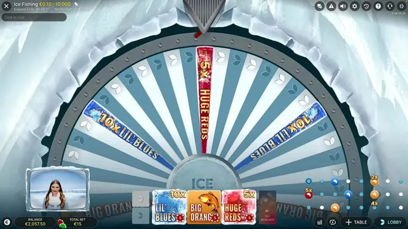

Apa itu game Ice Fishing?
Game show kasino live dari Evolution bertema memancing di es. Host memutar roda 53 bagian secara langsung dan segmen ikan membuka game bonus berpengganda. Ini judi uang asli, bukan game crash atau slot.
Game show live Evolution · Menang hingga 5000x · 18+
Ice Fishing adalah game show live bertema Arktik dari Evolution. Kamu bertaruh pada roda uang yang berputar, dan segmen ikan membuka game bonus dengan pengganda hingga 5000x. Panduan ini menjelaskan cara kerja game-nya, gameplay, dan apakah benar-benar menghasilkan uang.
Hanya 18+ Perjudian uang asli. Bermainlah secara bertanggung jawab, tetapkan batas, dan jangan pernah bertaruh melebihi yang mampu kamu tanggung. Bantuan gratis dan rahasia: BeGambleAware.org. Kami mungkin memperoleh komisi dari tautan operator, tanpa biaya tambahan untukmu.
Ice Fishing adalah game show kasino live dari Evolution, disiarkan langsung dengan seorang host dari studio bertema Arktik. Kamu bertaruh pada segmen roda 53 bagian dan host memutar roda secara langsung. Ini bukan game crash dan bukan slot: ini game show live uang asli, sebuah judi di mana rumah punya keunggulan. [CONFIRM: penyedia game].

1) Bertaruh pada satu atau beberapa segmen roda (Leaf atau warna ikan). 2) Sebelum putaran, pengganda acak hingga 10x bisa muncul. 3) Host memutar roda: Leaf membayar langsung, sedangkan Lil' Blues, Big Oranges, dan Huge Reds membuka game bonus tempat host menarik ikan berpengganda (hingga 500x, maks 5000x). Hasilnya acak dan independen, jadi tidak ada pola atau 'waktu yang tepat' yang bisa kamu prediksi.
Game membayar sesuai pengganda putaran, tetapi ini judi: hasilnya acak dan kamu bisa kalah. Tidak ada penghasilan yang dijamin. Waspadai klaim 'pasti menang' atau 'jam gacor', itu penipuan. Pelajari selengkapnya di halaman cek legitimitas kami.
Karena ini game live dengan host sungguhan, Ice Fishing tidak punya demo gratis dengan kredit virtual. Untuk melihat cara mainnya sebelum bertaruh, tonton video gameplay dan tangkapan ronde di halaman Demo & Gameplay Ice Fishing kami. Kamu juga bisa memantau ronde terbaru di halaman hasil Ice Fishing.
Game show kasino live dari Evolution bertema memancing di es. Host memutar roda 53 bagian secara langsung dan segmen ikan membuka game bonus berpengganda. Ini judi uang asli, bukan game crash atau slot.
Game membayar sesuai pengganda putaran, tetapi ini judi dengan hasil acak, jadi kamu bisa kalah. Tidak ada penghasilan yang dijamin.
Bertaruh pada segmen roda, lalu host memutar. Leaf membayar langsung; Lil' Blues, Big Oranges, dan Huge Reds membuka game bonus berpengganda. Pengganda hingga 10x juga bisa muncul sebelum putaran.
Tidak. Karena ini game live dengan host, tidak ada demo kredit virtual. Kamu bisa menonton gameplay-nya sebelum bermain uang asli.
Tidak. Ini roda fisik yang diputar host secara live, jadi tiap putaran independen. Tidak ada prediktor atau sinyal yang bisa menebak hasil. Penjualnya menipu.
Hanya 18+. Perjudian melibatkan risiko finansial dan bukan cara untuk menghasilkan uang. Bermainlah secara bertanggung jawab dan jangan pernah bertaruh lebih dari yang mampu kamu tanggung. Jika berjudi tidak lagi menyenangkan, cari bantuan: GamCare (gamcare.org.uk) dan BeGambleAware (begambleaware.org).
Pengungkapan afiliasi: beberapa tautan di halaman ini adalah tautan afiliasi. Jika kamu mendaftar melalui tautan tersebut, kami mungkin memperoleh komisi tanpa biaya tambahan untukmu. Ini tidak pernah memengaruhi penilaian kami. Ketersediaan dan syarat komersial ditetapkan oleh operator.